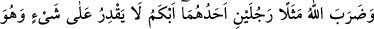
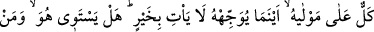

İNANAN BİR TOPLUM
İÇİN İBRETLER!
76. Allah, şu iki kişiyi de misal verir: Onlardan biri dilsizdir, hiçbir şey beceremez
ve efendisinin üstüne bir yüktür. Onu nereye gönderse bir hayır getiremez. Şimdi,
bu adamla, doğru yolda yürüyerek adâleti emreden kimse eşit olur mu?
77. Göklerin ve yerin gaybı Allah’a âiddir. Kıyâmetin kopması ise, göz açıp
kapama gibi veya daha az bir zamandan ibârettir. Şüphesiz Allah, her şeye
kâdirdir.
78. Siz, hiçbir şey bilmezken Allah, sizi analarınızın karnından çıkardı;
şükredesiniz diye size kulaklar, gözler ve kalpler verdi.
79. Göğün boşluğunda emre boyun eğdirilmiş olarak uçuşan kuşları görmediler
mi? Onları orada Allah’tan başkası tutamaz. Kuşkusuz bunda inanan bir toplum için
ibretler vardır.
“Allah, şu iki kişiyi de misal verir:” Bu diğer bir misaldir. Önceki misalin delâlet
ettiğini daha açık ve etkili bir şekilde gösterir. “Onlardan biri dilsizdir,” Kâşifî’nin
‘Şüphesiz kambur olan adam anadan doğma olmaz, sonradan olur.’ dediği gibi bu kişinin
doğumdan dilsiz ve sağır olması gerekir. “Hiçbir şey beceremez;” yâni kendisini veya
başkasını ilgilendiren şeyleri, anlayışsızlığı ve idrak bozukluğundan dolayı feraset ve
zekası olmadığı için anlayıp kavrayamaz. “Ve efendisinin üstüne bir yüktür.” Yâni
ihtiyaç ve geçimini üzerine alan, onun namına işlerini yapan kişiye bir meşakkat ve
zahmettir. Bu son ifâde, yukarıdaki mutlak cümlede hiçbir şeye gücü yetmediğini
anlattıktan sonra, ayrıca kendi işini bile yapamayacak derecede kudretsiz olduğunu